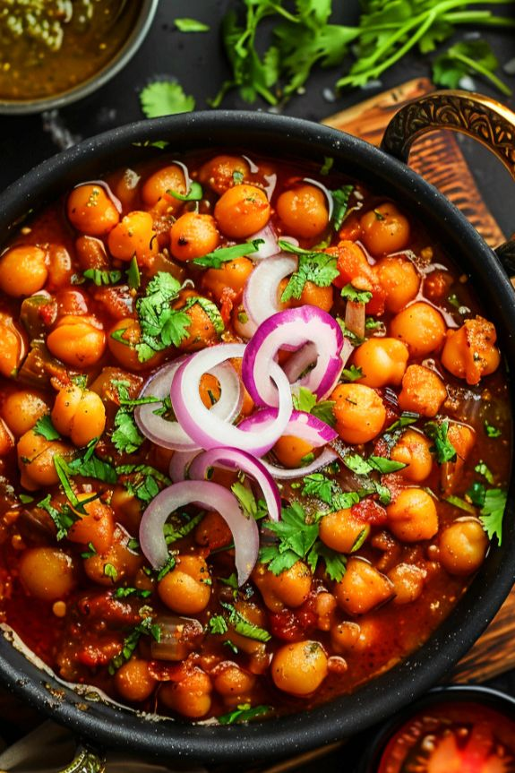
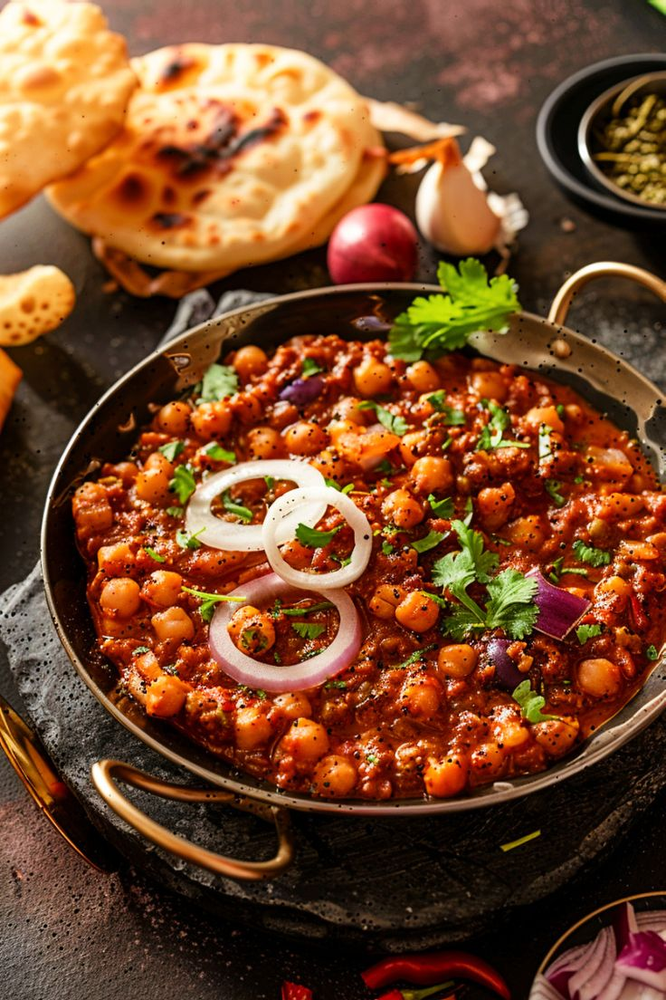

📝INGREDIENTS
For the base:
- 1 cup dried yellow/white peas
- 1 medium onion
- 1 tomato (chopped or pureed)
- 1-2 green chilies (slit)
- 1 tsp ginger paste
- ½ tsp turmeric powder
- ½ tsp red chili powder
- ½ tsp cumin powder
- ½ tsp coriander powder
- 1 tsp garam masala
- Salt to taste
- 2 tbsp mustard oil
For tempering (phoron):
- ½ tsp cumin seeds
- 1 bay leaf
- A pinch of asafoetida
For garnish:
- Chopped onions
- Chopped coriander leaves
- A squeeze of lemon juice
- Green chilies
- Tamarind water
👩🍳 Recipe

- Soak the peas:
- Soak dried peas overnight (or for 6–8 hours).
- Pressure cook them with salt and turmeric until soft but not mushy If using a pot, cook until tender.
- Prep the potatoes (optional):
- If using, fry or boil the diced potatoes until golden and tender.
- Make the base:
- Heat mustard oil in a pan until it starts smoking slightly.
- Add cumin seeds, bay leaf, and a pinch of hing.
- Add chopped onions and green chilies. Sauté until the onions are golden brown.
- Add ginger paste and sauté for another minute.
- Add tomatoes, turmeric, red chili, cumin, coriander powder, and salt.
- Cook until oil separates and masala is cooked well.
- Add peas and simmer:
- Add the boiled peas (and potatoes, if using) to the masala.
- Add a little water to get a thick gravy consistency.
- Simmer for 5–10 minutes on low heat. Adjust salt and spices to taste.
- Finish with garam masala.
- Serve:
- Garnish with chopped raw onions, coriander, lemon juice, and optionally a dash of tamarind water or kasundi.
- Serve hot with luchi, puffed rice (muri), or enjoy on its own!